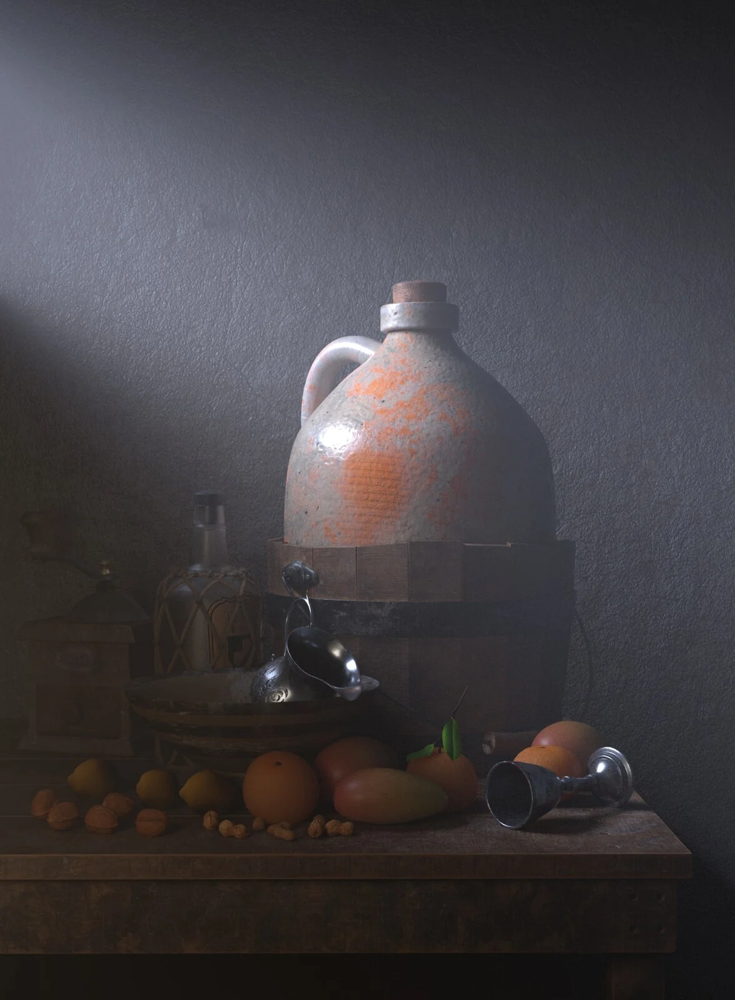
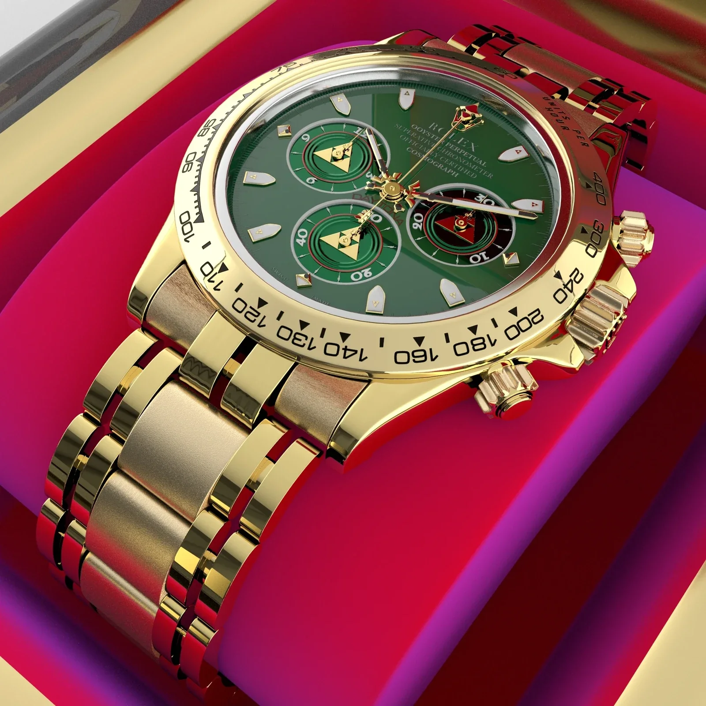

Diseño productos digitales y experiencias interactivas.
Soy Andy, diseñador UX/UI con experiencia en videojuegos, QA de software y desarrollo front-end. Diseño flujos e interfaces claros, pensando también en cómo se construyen y se prueban.
UX/UI al centro.
Yoolmi y Xapontic muestran mi trabajo en productos digitales. Los proyectos de videojuegos amplían esa perspectiva con interacción, pruebas e implementación.


Yoolmi
Diseñar un primer acercamiento a LSM: interfaces actuales, flujos de aprendizaje e investigación sobre a quién debe servir el producto.

Xapontic
Conectar la historia de una empresa social con la exploración de productos y los pedidos. Proyecto académico con cliente real: arquitectura, UI responsiva y desarrollo front-end.

Lobster Loader
Un puzzle 3D trabajado mediante playtesting, con iteraciones en controles, puntuación y retroalimentación durante seis meses de producción.

Monster Route
Un tema visual de señalamientos llevado a conceptos de menú, distribución del HUD y cuatro estados de resultados.
3D, materiales y producción
3D no es mi disciplina principal, pero conocer el pipeline me ayuda a hablar mejor con arte y desarrollo, detectar restricciones temprano y diseñar pensando en producción.

Lobster Loader Set de paquetes
Props de paquetes listos para juego que modelé y preparé en UV para Lobster Loader.
Mi contribución: modelado 3D + UVs · Créditos completos del equipo dentro.

Naturaleza muerta y materiales
Un estudio enfocado en modelado, materiales, iluminación y composición, con renders separados de materiales en Substance Painter.

Wind Waker Rolex
Mi primer proyecto 3D: un estudio hard-surface de un reloj con detalles inspirados en Wind Waker.
UX primero, pensando también en producción.
UX/UI y diseño interactivo son el centro de mi trabajo. Lo demás, videojuegos, front-end, QA y 3D, me ayuda a tomar decisiones que siguen funcionando cuando salen de Figma.